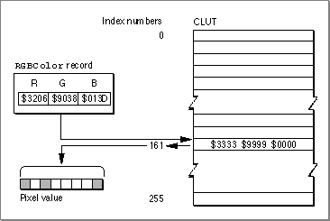

Legacy Document
Important: The information in this document is obsolete and should not be used for new development.
Important: The information in this document is obsolete and should not be used for new development.


About Color QuickDraw
Color QuickDraw is a collection of system software routines that your application can use to display hundreds, thousands, even millions of colors on capable screens. Color QuickDraw is available on all newer models of Macintosh computers; only those older computers based on the Motorola 68000 processor provide no support for Color QuickDraw.Color QuickDraw performs its operations in a graphics port called a color graphics port, which is based on a data structure of type
CGrafPort. As with basic graphics ports (which are based on a data structure of typeGrafPort), each color graphics port has its own local coordinate system. All fields in aCGrafPortrecord are expressed in these coordinates, and all calculations and actions that Color QuickDraw performs use its local coordinate system.As described in the chapter "QuickDraw Drawing," you can draw into a basic graphics port using eight predefined colors. With a color graphics port, however, you can define your own colors with which to draw. With Color QuickDraw, your application works in an abstract color space defined by three axes of red, green, and blue (RGB). Although the range of colors actually available to your application depends on the user's computer system, Color QuickDraw provides a consistent way for your application to deal with color, regardless of the characteristics of your user's screen and software configuration.
RGB Colors
When using Color QuickDraw, you specify colors as RGB colors. An RGB color is defined by its red, green, and blue components. For example, when each of the red, green, and blue components of a color is at maximum intensity ($FFFF), the result is the color white. When each of the components has zero intensity ($0000), the result is the color black.You specify a color to Color QuickDraw by creating an
RGBColorrecord in which you use three 16-bit unsigned integers to assign intensity values for the three additive primary colors. TheRGBColordata type is defined as follows.
TYPE RGBColor\xF0= RECORD red:\xF0 Integer; {red\xF0component} green: Integer; {green\xF0component} blue: Integer; {blue\xF0component} END;When you specify an RGB color in anRGBColorrecord and then draw with that color, Color QuickDraw translates that color to the various indexed or direct devices that your user may be using.For example, your application can use Color QuickDraw to display images containing up to 256 different colors on indexed devices. An indexed device is a graphics device--that is, a plug-in video card, a video interface built into a Macintosh computer, or an offscreen graphics world--that supports up to 256 colors in a color lookup table. Indexed devices support pixels of 1-bit, 2-bit, 4-bit, or 8-bit depths. On indexed devices, each pixel is represented in memory by an index to the graphics device's color lookup table (also known as the CLUT), where the currently available colors are stored. Such images, although limited in hue, take up relatively small amounts of memory. Color QuickDraw, working with the Color Manager, automatically matches the color your application specifies to the closest available color in the CLUT.
Your application can use the Palette Manager, described in the chapter "Palette Manager" in Inside Macintosh: Advanced Color Imaging, to exercise greater control of the colors in the CLUT. Note, however, that some Macintosh computers--such as black-and-white and grayscale PowerBook computers--have a fixed CLUT, which your application cannot change.
On direct devices, your application can use Color QuickDraw to display images containing thousands or millions of different colors. A direct device is a graphics device that supports up to 16 million colors having a direct correlation between a value placed in the graphics device and the color displayed onscreen. On attached direct devices, each pixel is represented in memory by the most significant bits of the actual red, green, and blue component values specified in an
RGBColorrecord by your application.Other output devices may render colors that differ from RGB colors; for example, many color printers work with CMYK (cyan, magenta, yellow, and black) colors. See Advanced Color Imaging on the Mac OS for information about color matching between screens, which use RGB colors, and devices--like printers--that use CMYK or other colors.
The Color Drawing Environment: Color Graphics Ports
A color graphics port defines a complete drawing environment that determines where and how color graphics operations take place. As with basic graphics ports, you can open many color graphics ports at once. Each color graphics port has its own local coordinate system, drawing pattern, background pattern, pen size and location, foreground color, background color, and pixel map. Using theSetPortprocedure (described in the chapter "Basic QuickDraw"), or theSetGWorldprocedure (described in the chapter "Offscreen Graphics Worlds"), you can instantly switch from one color or basic graphics port to another.When you use Window Manager and Dialog Manager routines and resources to create color windows, dialog boxes, and alert boxes, these managers automatically create color graphics ports for you. As described in Inside Macintosh: Macintosh Toolbox Essentials, for example, a color graphics port is automatically created when you use the Window Manager function
GetNewCWindoworNewCWindow. Color graphics ports are automatically created when your application provides the color-aware resources'dctb'and'actb'and then uses the Dialog Manager routinesGetNewDialogandAlert.A color graphics port is defined by a
CGrafPortrecord, which is diagrammed in
Figure 4-1. Some aspects of its contents are discussed after the figure; see page 4-39 for a complete description of the fields. Your application generally should not directly set any fields of aCGrafPortrecord; instead you should use the QuickDraw routines described in this book to manipulate them.Figure 4-1 The color graphics port
Table 4-3 on page 4-55 shows initial values for aCGrafPortrecord. ACGrafPortrecord is the same size as aGrafPortrecord (described in the chapter "Basic QuickDraw"), and most of the fields are identical for these two records. The important differences between these two data types are listed here:
Working with a
- In a
GrafPortrecord, theportBitsfield contains a complete 14-byteBitMaprecord. In aCGrafPortrecord, this field is partly replaced by the 4-byteportPixMapfield; this field contains a handle to aPixMaprecord.- In what would be the
rowBytesfield of theBitMaprecord stored in theportBitsfield of aGrafPortrecord, aCGrafPortrecord has a 2-byteportVersionfield in which the 2 high bits are always set. QuickDraw uses these bits to distinguishCGrafPortrecords fromGrafPortrecords, in which the 2 high bits of therowBytesfield are always clear.- Following the
portVersionfield in theCGrafPortrecord is thegrafVarsfield, which contains a handle to aGrafVarsrecord; this handle is not included in aGrafPortrecord. TheGrafVarsrecord contains color information used by Color QuickDraw and the Palette Manager.- In a
GrafPortrecord, thebkPat,pnPat, andfillPatfields hold 8-byte bit patterns. In aCGrafPortrecord, these fields are partly replaced by three 4-byte handles to pixel patterns. The resulting 12 bytes of additional space are taken up by thergbFgColorandrgbBkColorfields, which contain 6-byteRGBColorrecords specifying the optimal foreground and background colors for the color graphics port. Note that the closest matching available colors, which Color QuickDraw actually uses for the foreground and background, are stored in thefgColorandbkColorfields of theCGrafPortrecord.- In a
GrafPortrecord, you can supply thegrafProcsfield with a pointer to aQDProcsrecord that your application can store into if you want to customize QuickDraw drawing routines or use QuickDraw in other advanced, highly specialized ways. If you supply custom QuickDraw drawing routines in aCGrafPortrecord, you must provide this field with a pointer to a data structure of typeCQDProcs.
CGrafPortrecord is much like using aGrafPortrecord. The routinesSetPort,GetPort,PortSize,SetOrigin,SetPortBits, andMovePortTooperate on either port type, and the global variableThePortpoints to the current graphics port no matter which type it is. (Remember that drawing always takes place in the current graphics port.) These routines are described in the chapter "Basic QuickDraw."If you find it necessary, you can use type coercion to convert between
GrafPtrandCGrafPtrrecords. For example:
VAR myPort: CGrafPtr; SetPort (GrafPtr(myPort));While the
- Note
- You can use all QuickDraw drawing commands when drawing into a graphics port created with a
CGrafPortrecord, and you can use all Color QuickDraw drawing commands (such asFillCRect) when drawing into a graphics port created with aGrafPortrecord. However, Color QuickDraw drawing commands used with aGrafPortrecord don't take advantage of Color QuickDraw's color features.
CGrafPortrecord contains information for a color window, there can be many windows on a screen, and even more than one screen. TheGDevicerecord, described in the chapter "Graphics Devices," is the data structure that holds state information about a graphics device--such as the size of its boundary rectangle and whether the device is indexed or direct. Like the graphics port, theGDevicerecord is created automatically for you: QuickDraw uses information supplied by the Slot Manager to create aGDevicerecord for each graphics device found during startup. Many applications can let Color QuickDraw manage multiple screens of differing pixel depths. If your application needs more control over graphics device management--if your application needs certain screen depths to function effectively, for example--you can use the routines described in the chapter "Graphics Devices."Pixel Maps
TheportPixMapfield of aCGrafPortrecord contains a handle to a pixel map, a data structure of typePixMap. Just as basic QuickDraw does all of its drawing in a bitmap, Color QuickDraw draws in a pixel map.The representation of a color image in memory is a pixel image, analogous to the bit image used by basic QuickDraw. A
PixMaprecord includes a pointer to a pixel image, its dimensions, storage format, depth, resolution, and color usage. The pixel map is diagrammed in Figure 4-2. Some aspects of its contents are discussed after the figure; see page 4-37 for a complete description of its fields.
ThebaseAddrfield of aPixMaprecord contains a pointer to the beginning of the onscreen pixel image for a pixel map. The pixel image that appears on a screen is normally stored on a graphics card rather than in main memory. (There can be several pixel maps pointing to the same pixel image, each imposing its own coordinate system on it.)As with a bitmap, the pixel map's boundary rectangle is initially set to the size of the main screen. However, you should never use a pixel map's boundary rectangle to determine the size of the screen; instead use the value of the
gdRectfield of theGDevicerecord for the screen, as described in the chapter "Graphics Devices" in this book.The number of bits per pixel in the pixel image is called the pixel depth. Pixels on indexed devices can be 1, 2, 4, or 8 bits deep. (A pixel image that is 1 bit deep is equivalent to a bit image.) Pixels on direct devices can be 16 or 32 bits deep. (Even if your application creates a basic graphics port on a direct device, pixels are never less than one of these two depths.) When a user uses the Monitors control panel to set a 16-bit or 32-bit direct device to use 2, 4, 16, or 256 colors as a grayscale or color device, the direct device creates a CLUT and operates like an indexed device.
When your application specifies an RGB color for some pixel in a pixel image, Color QuickDraw translates that color into a value appropriate for display on the user's screen; Color QuickDraw stores this value in the pixel. The pixel value is a number used by system software and a graphics device to represent a color. The translation from the color you specify in an
RGBColorrecord to a pixel value is performed at the time you draw the color. The process differs for indexed and direct devices, as described here.
This process is described in greater detail in "Color QuickDraw's Translation of RGB Colors to Pixel Values" beginning on page 4-10.
- When drawing on indexed devices, Color QuickDraw calls the Color Manager to supply the index to the color that most closely matches the requested color in the current device's CLUT. This index becomes the pixel value for that color.
- When drawing on direct devices, Color QuickDraw truncates the least significant bits from the
red,green, andbluefields of theRGBColorrecord. This becomes the pixel value that Color QuickDraw sends to the graphics device.
The
hResandvResfields of thePixMaprecord describe the horizontal and vertical resolution of the image in pixels per inch, abbreviated as dpi (dots per inch). The values for these fields are of typeFixed; by default, the value for each is $00480000 (for 72 dpi), but Color QuickDraw supportsPixMaprecords of other resolutions. For example,PixMaprecords for scanners and frame grabbers can have dpi resolutions of 150, 200, 300, or greater.The
pixelTypefield of thePixMaprecord specifies the format--indexed or direct--used to hold the pixels in the image. For indexed devices the value is 0; for direct devices it is 16 (which can be represented by the constantRGBDirect).The
pixelSizefield specifies the pixel depth. Indexed devices can be 1, 2, 4, or 8 bits deep; direct devices can be 16 or 32 bits deep.The
cmpCountandcmpSizefields describe how the pixel values are organized. For pixels on indexed devices, the color component count (stored in thecmpCountfield) is 1--for the index into the graphics device's CLUT, where the colors are stored. For pixels on direct devices, the color component count is 3--for the red, green, and blue components of each pixel.The
cmpSizefield specifies how large each color component is. For indexed devices it is the same value as that in thepixelSizefield: 1, 2, 4, or 8 bits. For direct pixels, each of the three color components can be either 5 bits for a 16-bit pixel (1 of these 16 bits is unused), or 8 bits for a 32-bit pixel (8 of these 32 bits are unused).The
planeBytesfield specifies an offset in bytes from one plane to another. Since Color QuickDraw doesn't support multiple-plane images, the value of this field is always 0.Finally, the
pmTablefield contains a handle to theColorTablerecord. Color tables define the colors available for pixel images on indexed devices. (The Color Manager stores a color table for the currently available colors in the graphics device's CLUT; you can use the Palette Manager to assign different color tables to your different windows.) You can create color tables using eitherColorTablerecords (described on page 4-47) or color table ('clut') resources (described on page 4-94). Pixel images on direct devices don't need a color table because the colors are stored right in the pixel values; in such cases thepmTablefield points to a dummy color table.
- Note
- The pixel map for a window's color graphics port always consists of the pixel depth, color table, and boundary rectangle of the main screen, even if the window is created on or moved to an entirely different screen.
Pixel Patterns
Color QuickDraw supplements the black-and-white patterns of basic QuickDraw with pixel patterns, which can use colors at any pixel depth and can be of any width and height that's a power of 2. A pixel pattern defines a repeating design (such as stripes of different colors) or a color otherwise unavailable on indexed devices. For example, if your application draws to an indexed device that supports 4 bits per pixel, your application has 16 colors available if it simply sets the foreground color and draws. However, if your application uses theMakeRGBPatprocedure to create patterns that use these 16 colors in various combinations, and then draws using that pattern, your application can effectively have as many as 125 approximated colors at its disposal. For example, you can specify a purple color toMakeRGBPat, which creates a pattern that mixes blue and red pixels.As with bit patterns (described in the chapter "QuickDraw Drawing"), your application can use pixel patterns to draw lines and shapes on the screen. In a color graphics port, the graphics pen has a pixel pattern specified in the
pnPixPatfield of theCGrafPortrecord. This pixel pattern acts like the ink in the pen; the pixels in the pattern interact with the pixels in the pixel map according to the pattern mode of the graphics pen. When you use theFrameRect,FrameRoundRect,FrameArc,FramePoly,FrameRgn,PaintRect,PaintRoundRect,PaintArc,PaintPoly, andPaintRgnprocedures (described in the chapter "QuickDraw Drawing") to draw shapes, these procedures draw the shape with the pattern specified in thepnPixPatfield. Initially, every
graphics pen is assigned an all-black pattern, but you can use thePenPixPat
procedure to assign a different pixel pattern to the graphics pen.You can use the
FillCRect,FillCRoundRect,FillCArc,FillCPoly, andFillCRgnprocedures (described later in this chapter) to draw shapes with a pixel pattern other than the one specified in thepnPixPatfield. When your application uses one of these procedures, the procedure stores the pattern your application specifies in thefillPixPatfield of theCGrafPortrecord and then calls a low-level drawing routine that gets the pattern from that field.Each graphics port also has a background pattern that's used when an area is erased (for example, by the
EraseRect,EraseRoundRect,EraseArc,ErasePoly, andEraseRgnprocedures, described in the chapter "QuickDraw Drawing") and when pixels are scrolled out of an area by theScrollRectprocedure, described in the chapter "Basic QuickDraw." Every color graphics port stores a background pixel pattern in thebkPixPatfield of itsCGrafPortrecord. Initially, every graphics port is assigned an all-white background pattern, but you can use theBackPixPatprocedure to assign a different pixel pattern.You can create your own pixel patterns in your program code, but it's usually simpler and more convenient to store them in resources of type
'ppat'.Each pixel map has its own color table; therefore, pixel patterns can consist of any number of colors, and they don't usually require the graphics port's foreground and background colors to have particular values.
- Note
- Color QuickDraw also supports bit patterns. When used in a
CGrafPortrecord, such patterns are limited to 8-by-8 bit dimensions and are always drawn using the values in thefgColorandbkColorfields of theCGrafPortrecord.Color QuickDraw's Translation of RGB Colors to Pixel Values
When using Color QuickDraw, your application refers to a color only through the three 16-bit fields of a 48-bitRGBColorrecord; you use these fields to specify the red, green, and blue components of your desired color. When your application draws into a pixel map, Color QuickDraw and the Color Manager translate yourRGBColorrecords into pixel values; these pixel values are sent to your users' graphics devices, which display the pixels accordingly.Your application never needs to handle pixel values. However, to clarify the relation between your application's 48-bit
RGBColorrecords and the pixels that are actually displayed, this section presents some examples of how Color QuickDraw derives pixel values from yourRGBColorrecords.Indexed devices were introduced to support--with minimal memory requirements--the color capabilities of the Macintosh II computer. The pixel value for any color on an indexed device is represented by a single byte. Each byte contains an index number that specifies one of 256 colors available on the device's CLUT. This index number is the pixel value for the pixel. (Some indexed devices support 1-bit, 2-bit, or 4-bit pixel values, resulting in tables containing 2, 4, or 16 colors, respectively, as shown in Plate 1 in the front of this book.)
To obtain an 8-bit pixel value from the 48-bit
RGBColorrecord specified by your application, Color QuickDraw calls on the Color Manager to determine the closest RGB color stored in the CLUT on the current device. The index number to that color is then stored in the 8-bit pixel.For example, the
RGBColorrecord for a medium green pixel is represented on the left side of Figure 4-3. An application might create such a record and pass it to theRGBForeColorprocedure, which sets the foreground color for drawing. In system software's standard 8-bit color lookup table (which is defined in a'clut'resource with the resource ID of 8), the closest color to that medium green is stored as table entry 161. When the next pixel is drawn, this index number is stored in the pixel image as the pixel value.Figure 4-3 Translating a 48-bit
RGBColorrecord to an 8-bit pixel value on an indexed device
The application might later use theGetCPixelprocedure to determine the color of a particular pixel. As shown in Figure 4-4, the Color Manager uses the index number stored as the pixel value to find the 48-bitRGBColorrecord stored in the CLUT for that pixel's color--which, as with the medium green in this example, is not necessarily the exact color first specified by the application. The difference, however, is imperceptible.Figure 4-4 Translating an 8-bit pixel value on an indexed device to a 48-bit
RGBColorrecord
Direct devices support 32-bit and 16-bit pixel values. Direct devices do not use tables to store and look up colors, nor do their pixel values consist of index numbers. For each pixel on a direct device, Color QuickDraw instead derives the pixel value by concatenating the values of thered,green, andbluefields of anRGBColorrecord.As shown in Figure 4-5, Color QuickDraw converts a 48-bit
RGBColorrecord into a 32-bit pixel value by storing the most significant 8 bits of each 16-bit field of theRGBColorrecord into the lower 3 bytes of the pixel value, leaving 8 unused bits in the high byte of the pixel value.Figure 4-5 Translating a 48-bit
RGBColorrecord to a 32-bit pixel value on a direct device
Color QuickDraw converts a 48-bitRGBColorrecord into a 16-bit pixel value by storing the most significant 5 bits of each 16-bit field of theRGBColorrecord into the lower 15 bits of the pixel value, leaving an unused high bit, as shown in Figure 4-6.Figure 4-6 Translating a 48-bit
RGBColorrecord to a 16-bit pixel value on a direct device
Figure 4-7 shows how Color QuickDraw expands a 32-bit pixel value to a 48-bitRGBColorrecord by dropping the unused high byte of the pixel value and doubling each of its 8-bit components. Note that the resulting 48-bit value differs in the least significant 8 bits of each component from the originalRGBColorrecord in Figure 4-5.Figure 4-7 Translating a 32-bit pixel value to a 48-bit
RGBColorrecord
Figure 4-8 shows how Color QuickDraw expands a 16-bit pixel value to a 48-bitRGBColorrecord by dropping the unused high bit of the pixel value and inserting three copies of each 5-bit component and a copy of the most significant bit into each 16-bit field of theRGBColorrecord. Note that the result differs (in the least significant 11 bits of each component) from the original 48-bit value in Figure 4-5. The difference, however, is imperceptible.Figure 4-8 Translating a 16-bit pixel value to a 48-bit
RGBColorrecordColors on Grayscale Screens
When Color QuickDraw displays a color on a grayscale screen, it computes the luminance, or intensity of light, of the desired color and uses that value to determine the appropriate gray value to draw. A grayscale graphics device can be a color graphics device that the user sets to grayscale by using the Monitors control panel; for such a graphics device, Color QuickDraw places an evenly spaced set of grays, forming a linear ramp from white to black, in the graphics device's CLUT. (When a user uses the Monitors control panel to set a 16-bit or 32-bit direct device to use 2, 4, 16, or 256 colors as a grayscale or color device, the direct device creates a CLUT and operates like an indexed device.)By using the
GetCTablefunction, described on page 4-83, your application can obtain the default color tables for various graphics devices, including grayscale devices.